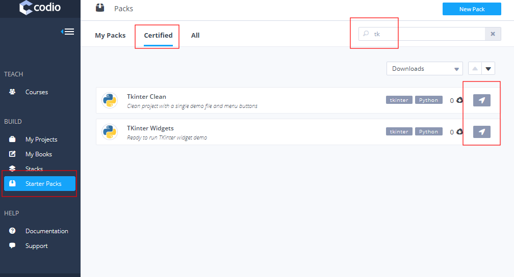
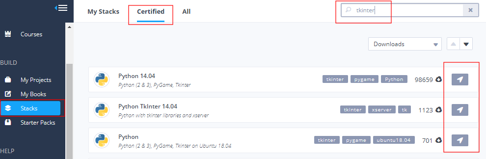
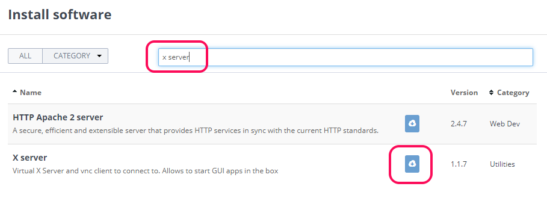

Tkinter¶
Important: Tkinter is used to build User Interfaces for Python development. For those following the OCR GCSE, this is not a requirement. For more advanced students, we recommend that you use HTML, CSS and Javascript for building modern front-end UIs that have far superior workplace relevance than Python+Tkinter.
There are a number of teachers who use the Tkinter UI library for Python. Tkinter normally relies on a local PC with a graphics card. Codio, being Cloud based, does not not have graphics cards. Nevertheless, we have implemented a fully functional solution that works within a browser and in the Cloud.
This page describes the various ways you can get Tkinter up and running.
Starter Pack : Clean - gives you a clean Tkinter project with preconfigured menu buttons for running your Python file and the viewer.
Starter Pack : Widgets - gives you a set of demo widgets you can play with.
Stack - gives you an empty project with tkinter ready to run.
From scratch - describes how to make any existing Codio project ready to run Tkinter that was not initially set up to run Tkinter.
Starter Pack : Clean¶
Perhaps the best place for most users to start is the TKinter Clean Starter Pack. This gives you a clean project with a simple demo Python file to play with.
Here is a video that runs you through the entire process.
From the main dashboard, select Starter Packs on the left, then the Certified tab at the top of the main page.

Search for tkinter in the search field then select the TKinter Clean pack as shown above. You will be taken to the new project screen where you can enter a name for your project. Finally, press the Create button at the bottom of the page and a new project will be created.
Once it is loaded, follow these steps to see the demo file working.
Open up
demo.pyin the file tree.In the Codio menu, press the Start Current button (the one with the rocket icon next to it). This will run your Python file. It opens a new terminal window, which you should leave open.
The right most Codio menu item should be Viewer. Press this to run the viewer. It will take a few seconds to load.
If you change your Python code, you will need to close the terminal window and then press the Start Current button again to reload it. You do not need to reload the Viewer, which will automatically reconnect when you rerun your Python file.
Starter Pack - Widgets¶
This gives you a complete set of demo widgets. From the main dashboard, select Starter Packs on the left, then the Certified tab at the top of the main page.
Search for tkinter in the search field then select the TKinter Widgets pack as shown above. You will be taken to the new project screen where you can enter a name for your project. Finally, press the Create button at the bottom of the page and a new project will be created.
TKinter Widgets¶
This Pack contains a set of widget demo files that you can play with.
Once your project opens, you can quickly play with this in one of 2 ways using the Rocket menu item. This is the Codio menu item with a rocket next to it.
Full Widget Demo¶
In the Codio menu, select ‘Start widget.py’.
From the neighbouring menu item, press View widget demo.
Individual python file¶
Open a python file in the file tree.
From the neighbouring menu item, press View widget demo.
Stack¶
If you want to create a completely empty Codio project that is Tkinter ready, then go to the Stacks menu item in the main dashboard.
Click on the Certified tab at the top
then search for tkinter
Finally, select the stack
after which you will be taken to the new project screen. Enter a project name then press the Create button at the bottom of the page and a new project will be created.

This Stack will not give you any preconfigured buttons (see the above Starter Pack: Clean for this). You can now create your Python files and run Tkinter. Here are some tips on how to do this.
Running the Python file¶
To run a Python file you will need to use the Terminal or configure you own Codio button shortcut. To use the terminal, open a new Terminal from the Tools->Terminal menu item. Then make sure you are in the correct folder and type python3 mypythonfile.py.
Once this is running, do not close the terminal window or you will terminate the Python process. Go to the right most Codio menu and from the dropdown, select Box URL. This will open up the viewer.
For information on how to set up your own Codio menu buttons, click here.
From scratch¶
For those of you who want to add Tkinter support to an existing Codio project, you should follow the steps below. Adding the XServer component will add support for any application that writes to the screen.

Open the Install Software screen from the Tools->Install Software menu.
Type
x serverinto the search box.Press the Install button to install the XServer component.
When the installation has completed (This can take some time, so be patient), Restart the box
We would recommend that you configure your .codio file to have an option to start the viewer. This is described here. You should either overwrite the entire contents of this file with the content shown below, or if you already have a .codio file with contents you want to keep, just add the line with the Viewer entry you can see below into the preview section.
{
// Configure your Run and Preview buttons here.
// Run button configuration
"commands": {
::
"Start Current": "python3 {{filename}}"
},
// Preview button configuration
"preview": {
::
"Viewer": "https://{{domain}}:9500/"
}
}